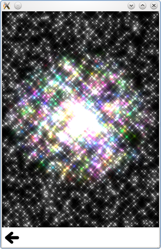

QtQuick.Particles Examples - Affectors
This is a collection of examples using Affectors in the QML particle system.

This is a collection of small QML examples relating to using Affectors in the particle system. Each example is a small QML file emphasizing a particular element or feature.
All at once shows off several of the features of ImageParticle at the same time.
Colored shows a simple ImageParticle with some color variation.
Color Table sets the color over life on the particles to provide a fixed rainbow effect.
Deformation spins and squishes a starfish particle.
Rotation demonstrates the autoRotate property, so that particles rotate in the direction that they travel.
Sharing demonstrates what happens when multiple ImageParticles try to render the same particle. The following ImageParticle renders the particles inside the ListView:
The following ImageParticle is placed inside the list highlight, and renders the particles above the other ImageParticle.
Note that because it sets the color and alpha in this ImageParticle, it renders the particles in a different color. Since it doesn't specify anything about the rotation, it shares the rotation with the other ImageParticle so that the flowers are rotated the same way in both. Note that you can undo rotation in another ImageParticle, you just need to explicity set rotationVariation to 0.
Sprites demonstrates using an image particle to render animated sprites instead of static images for each particle.
Files:
- particles/imageparticle/imageparticle.qml
- particles/imageparticle/content/allatonce.qml
- particles/imageparticle/content/colored.qml
- particles/imageparticle/content/colortable.qml
- particles/imageparticle/content/deformation.qml
- particles/imageparticle/content/rotation.qml
- particles/imageparticle/content/sharing.qml
- particles/imageparticle/content/sprites.qml
- particles/imageparticle/main.cpp
- particles/imageparticle/imageparticle.pro
- particles/imageparticle/imageparticle.qmlproject
- particles/imageparticle/imageparticle.qrc